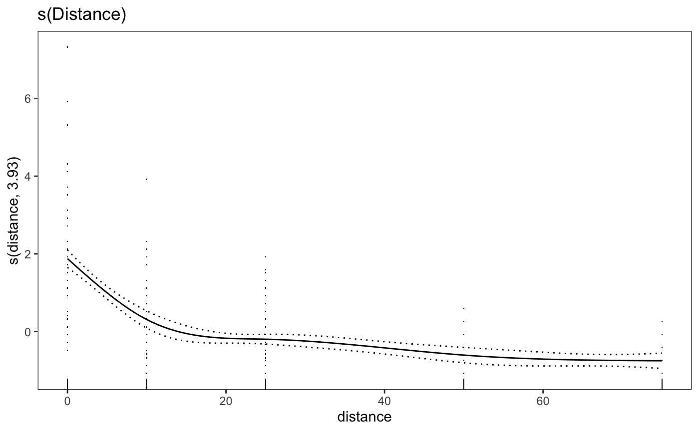

p_gam.RdGeneric function to print GAMs using mgcViz
p_gam(x)
| x | a GAM object created by `[mgcv]gam()` |
|---|
a `ggplot2` graph object of the GAM
#>#> ✓ ggplot2 3.3.0 ✓ purrr 0.3.3 #> ✓ tibble 2.1.3 ✓ dplyr 0.8.5 #> ✓ tidyr 1.0.2 ✓ stringr 1.4.0 #> ✓ readr 1.3.1 ✓ forcats 0.5.0#> Conflicts ──────────────────────── tidyverse_conflicts() ── #> x dplyr::filter() masks stats::filter() #> x dplyr::lag() masks stats::lag()library("mgcv")#>#> #>#> #> #>#>library("mgcViz")#>#>#> #> #>#> #> #>#> #>#> #> #>library("ChickpeaAscoDispersal") # these data are automatically loaded dat <- left_join(lesion_counts, summary_weather, by = c("site", "rep")) mod1 <- gam( mean_pot_count ~ s(distance, k = 5), data = dat ) print(p_gam(x = getViz(mod1)) + ggtitle("s(Distance)"), pages = 1)